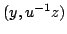
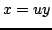

Usage
(y, u, u1) := unitNormal x
(y, z1) := unitNormal(x, z)
Signatures
unitNormal: % (%, %. %)
unitNormal: (%,%)
| Parameter | Type | Description |
|---|---|---|
| x,y | % | Elements of the ring |
Returns
unitNormal(x) returns, while unitNormal(x,z) returns . In both cases,  and
is a unit.
See Also
canonicalUnitNormal?, unit?